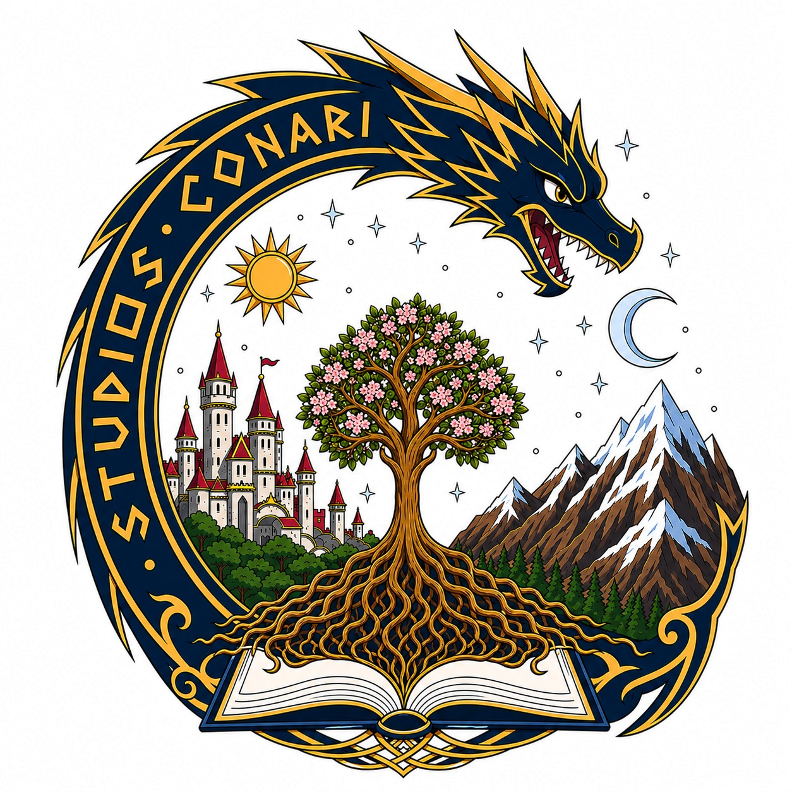

Base conceptual, narrativa y visual para los futuros proyectos originales de Conari.
Estudio creativo chileno
Donde nacen mundos y leyendas eternas.
Studios Conari desarrolla videojuegos, universos narrativos e identidades visuales donde convergen arte, diseño, tecnología e investigación cultural para construir obras con alma propia.
Worldbuilding
Dirección de arte
Desarrollo de videojuegos
Investigación cultural
Desplázate para descubrir el estudio
Desarrollamos obras donde worldbuilding, diseño, tecnología e investigación cultural avanzan en una misma dirección.
El estudio
Una casa creativa para universos originales
Studios Conari SpA es un estudio chileno orientado a la creación de videojuegos, experiencias interactivas y propiedades intelectuales originales. Nuestra mirada combina narrativa, arte, diseño de experiencia, desarrollo técnico y documentación creativa.
Entendemos cada proyecto como una construcción integral: primero se investiga, luego se define una identidad, después se prototipa y finalmente se proyecta una obra capaz de sostenerse tanto estética como técnicamente.
Nuestra esencia
Arte, relato y tecnología con una misma dirección
El estudio busca construir experiencias con identidad reconocible, donde la forma visual, la lógica del juego y la memoria del mundo narrativo trabajen como una sola voz.
Identidad propia
Diseñamos universos con una voz visual y narrativa definida, evitando soluciones genéricas o intercambiables.
Investigación aplicada
Trabajamos con referencias, documentación y análisis antes de fijar decisiones de dirección de arte o diseño.
Proyección transmedia
Concebimos cada IP como una base viva para crecer hacia videojuegos, materiales editoriales y nuevas plataformas.
Trayectoria del estudio
Del aprendizaje técnico a la construcción de IP propias
Cada proyecto cumple una función distinta dentro del crecimiento del estudio: aprender, validar, consolidar lenguaje y preparar el salto hacia una propiedad intelectual original de mayor escala.

Proyecto Origen
Primer prototipo formativo centrado en bases de RPG top-down. Permitió trabajar exploración, combate, inventario, progresión y primeras decisiones de interfaz, además de ordenar un pipeline de producción inicial en Godot.

Proyecto Resonancia
Videojuego de ritmo arcade orientado a precisión, lectura visual y respuesta musical. Aporta experimentación con biblioteca de canciones, versus, juego local/LAN, herramientas internas y validación de flujos colaborativos para interfaces más complejas.

VILU y futuras obras
Próxima producción original del estudio. Reunirá los aprendizajes técnicos, narrativos y documentales acumulados en las etapas anteriores, consolidando una obra propia con mayor ambición estética, identidad autoral y proyección para desarrollo a largo plazo.
La marca
Un sistema visual que reúne origen, conocimiento y territorio
La identidad de Studios Conari no se limita a un logotipo: es una síntesis visual de los principios que sostienen al estudio y de la clase de mundos que aspiramos a construir.
- Dragón: imaginación, impulso creativo y fuerza de la visión fundacional.
- Árbol y libro abierto: crecimiento orgánico, aprendizaje, documentación y worldbuilding.
- Castillo y montañas: territorio, épica, permanencia y construcción de universos.
- Sol y luna: dualidad, ciclo creativo y equilibrio entre claridad y misterio.

Contacto
Conversemos sobre mundos, proyectos y colaboraciones
Estamos en etapa de consolidación de estudio y apertura de redes. Si deseas conocer más sobre nuestro trabajo, escribirnos o seguir el desarrollo de nuestras futuras obras, puedes hacerlo por estos canales.